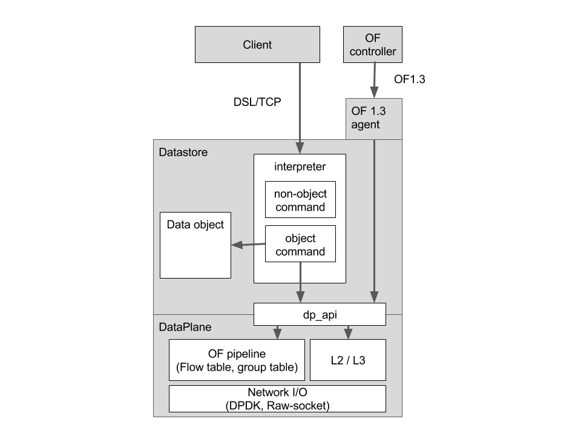

3. Lagopus version 0.2の振り返り¶
次期Lagopus software switchの設計や開発にむけて, 2016年度まで開発したLagopus software switchの総括と課題を記述する．
Lagopus 0.2の全体のアーキテクチャを以下の図に示す．
Lagopus version 0.2では，DatastoreがLagopusの設定情報や資源情報を管理し，各コンポーネントやモジュールの統合管理を行っている．
3.1. 総括¶
- OpenFlow 1.3に最も適合したソフトウエアスイッチ実装
- OpenFlowの拡張に柔軟なOpenFlow agent実装
- 新しいOpenFlow protocolへの拡張の容易さ
- 複数プロトコルフォーマットに対応したdataplane実装
- 新しいプロトコルフォーマットに柔軟なOpenFlow protocolへの拡張の容易さ
- Tunnelプロトコルへの拡張の容易さ
- OF normal処理が可能なHybridデータプレーン構成
- OpenFlowの拡張に柔軟なOpenFlow agent実装
- DPDKを活用した高速なdataplane (Fast-path)実装
- 20MPPS級のパケット転送・処理
- マルチコアが活用可能
- Flow cache機構によるフロー検索・処理のバイパス
- OSのNW stackと連携可能なL2/L3機能 (OF normal処理時)
- OSへのイベント・パケット処理・制御エスカレーション機構
- スイッチ設定管理系 (Datastore) を中心にしたスイッチの統合資源管理
- スイッチ設定言語による柔軟な設定
- 差分情報の通知
- 情報の永続化機能
- 情報のvalidation
- 設定のRoll-back機能
- Atomicな設定操作
- 各モジュールの管理
- 設定情報管理とcall-backによる各モジュールの制御管理
- スイッチ設定言語による柔軟な設定
3.2. 課題と改善点¶
3.2.1. Agent系¶
- プロトコル制御との連携IFがDSLとOpenFlowのみ
- プロプラなRouting OSやオープンソースのRouting OSと連携させたい
- プロトコル制御向け (slow-path) のパケットやイベントエスカレーションの改善
- 現時点ではOpenFlow agentへのエスカレーションパスのみ
- DPDK port -> 対応するtap -> パケット処理 -> tap -> 対応するDPDK port
- プロトコル制御向から送られた制御パケットもTapからの出力のみ
- OpenFlowにおけるpacket-out的な扱いがしたい
- 現時点ではOpenFlow agentへのエスカレーションパスのみ
3.2.2. Dataplane系¶
- L2以外の終端機能が弱い
- L3やTunnel処理のための追加機能が必要
- IPsecへの対応がOFの拡張としては難しい
- プロトコルに特化したLookupとアクションがほしい
- OpenFlow full-featureでの処理は重い
- Ingressとegressに分けて処理するように変更
- プロトコルに特化してテーブル構成を変更したい
- プロトコル制御と連携するデータプレーンのlookup領域やaction領域を変更可能
- プロトコルに特化してテーブル構成を変更したい
- Pipeliner
- 性能を出すための処理単位が大きすぎる
- 各pipeline stageの処理の重さが調整出来ない
3.2.3. Datastore系¶
- 管理系のIFはDSLのみに限定
- APIやRPCにより制御・設定可能にしたい
- Datastoreの拡張性が低い
- Bridge配下の肥大化
- 単純化したい
- 作用・副作用点
- スイッチ情報モデルが複雑化，モデルを再整理した方がよい
- 揮発的な情報と不揮発情報に分けた情報管理
- 単純化したい
- DSLとDatastoreが密結合
- DSLが中心になって各コンポーネントを制御している方法を改良したい
- Bridge配下の肥大化